#> Educacion Ingreso
#> 1 1 250
#> 2 2 200
#> 3 3 250
#> 4 4 300
#> 5 5 400
#> 6 6 350
#> 7 7 400
#> 8 8 350
R para el análisis de datos
Sesión 9: Regresión logística
Kevin Carrasco
Sociología - UAH
1er Sem 2026
R-data-analisis.netlify.com
Contenidos
1. Repaso de sesión anterior
2. Estimación regresión logística
3. Ajuste regresión logística
Asociación: covarianza / correlación
¿Se relaciona la variación de una variable, con la variación de otra variable?

- Pero ojo, correlación no implica causalidad

¿Qué es la regresión lineal?
- Es un modelo estadístico
Se usa para:
- Conocer: La relación de una variable dependiente de acuerdo a una/otras independiente(s)
- Predecir: Estimar el valor de una variable dependiente de acuerdo al valor de otras
- Inferir: si estas relaciones son estadísticamente significativas
¿Qué es la regresión lineal?
- Dos tipos de regresión:
- Regresión lineal simple (una variable independiente)
- Regresión lineal múltimple (más de una variable independiente)
Ejemplo
Ejemplo
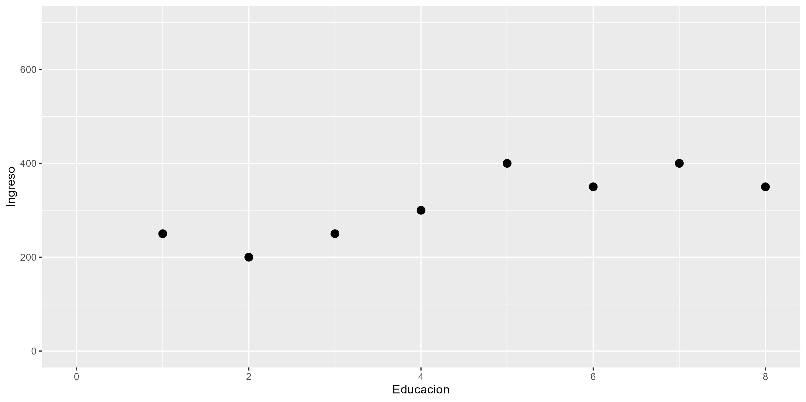
Ejemplo
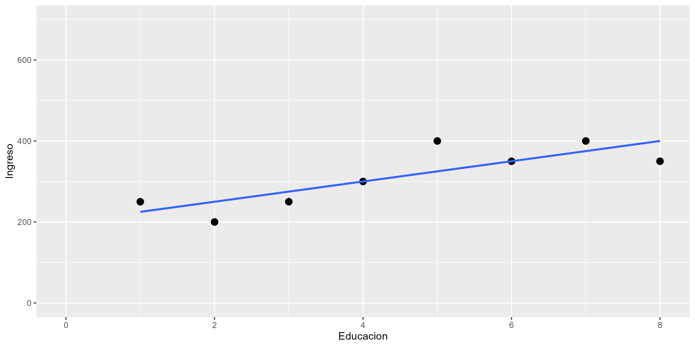
La recta de regresión
\[\widehat{Y}=b_{0} +b_{1}X\]
Donde
\(\widehat{Y}\) es el valor estimado de \(Y\)
\(b_{0}\) es el intercepto de la recta (el valor de Y cuando X es 0)
\(b_{1}\) es el coeficiente de regresión, que nos dice cuánto aumenta Y por cada punto que aumenta X
Pero este es un curso de R, así que:
#>
#> Call:
#> lm(formula = Ingreso ~ Educacion, data = data)
#>
#> Coefficients:
#> (Intercept) Educacion
#> 200 25Ejemplo
Por cada unidad que aumenta educación, ingreso aumenta en 25 unidades

Sesión 8
Regresión lineal
R2
Inferencia
Valores predichos
Varianza explicada
- ¿Qué porcentaje de la varianza de Y logramos explicar con X?
- R2 = Porcentaje de la variación de Y puede ser asociado a la variación de X
Ejemplo
El ajuste del modelo a los datos se relaciona con la proporción de residuos generados por el modelo respecto de la varianza total de Y (R2)
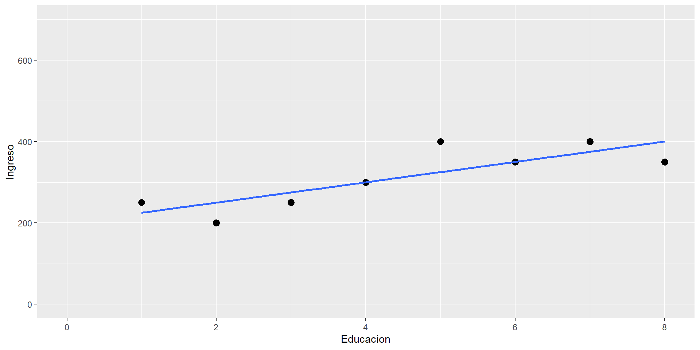
Sesión 8
Repaso sesión anterior
Regresión lineal
R2
Inferencia
Valores predichos
Inferencia estadística
- ¿Cómo sabemos si \(b_{1}\) es estadísticamente significativo?
- ¿Nuestros datos se pueden extrapolar a la población?
| Model 1 | |
|---|---|
| (Intercept) | 200.00** |
| (35.57) | |
| Educacion | 25.00* |
| (7.04) | |
| R2 | 0.68 |
| Adj. R2 | 0.62 |
| Num. obs. | 8 |
| ***p < 0.001; **p < 0.01; *p < 0.05 | |
| Model 1 | |
|---|---|
| (Intercept) | 106.12* |
| (33.92) | |
| Educacion | 7.07 |
| (6.57) | |
| edad | 5.48* |
| (1.56) | |
| R2 | 0.91 |
| Adj. R2 | 0.87 |
| Num. obs. | 8 |
| ***p < 0.001; **p < 0.01; *p < 0.05 | |
Parcialización

¿y la interpretación para variables categóricas?
| Model 1 | |
|---|---|
| Intercepto | 233.33*** |
| (23.57) | |
| Educación media | 116.67* |
| (37.27) | |
| Educación superior | 133.33* |
| (33.33) | |
| R2 | 0.78 |
| Adj. R2 | 0.70 |
| Num. obs. | 8 |
| ***p < 0.001; **p < 0.01; *p < 0.05 | |
Las personas que tienen educación media ganan $116mil más en comparación con quienes tienen educación básica, efecto que es estadísticamente significativo (p<0.01)
¿Se puede anticipar el final?
Titanic data
| No | Variable | Stats / Values | Freqs (% of Valid) | Graph | Valid | Missing | ||||||||||
|---|---|---|---|---|---|---|---|---|---|---|---|---|---|---|---|---|
| 1 | survived [factor] |
|
|
 |
1046 (100.0%) | 0 (0.0%) | ||||||||||
| 2 | sex [factor] |
|
|
 |
1046 (100.0%) | 0 (0.0%) | ||||||||||
| 3 | age [numeric] |
|
98 distinct values |  |
1046 (100.0%) | 0 (0.0%) |
Generated by summarytools 1.0.1 (R version 4.3.2)
2026-06-02
Sobrevivientes & Sexo
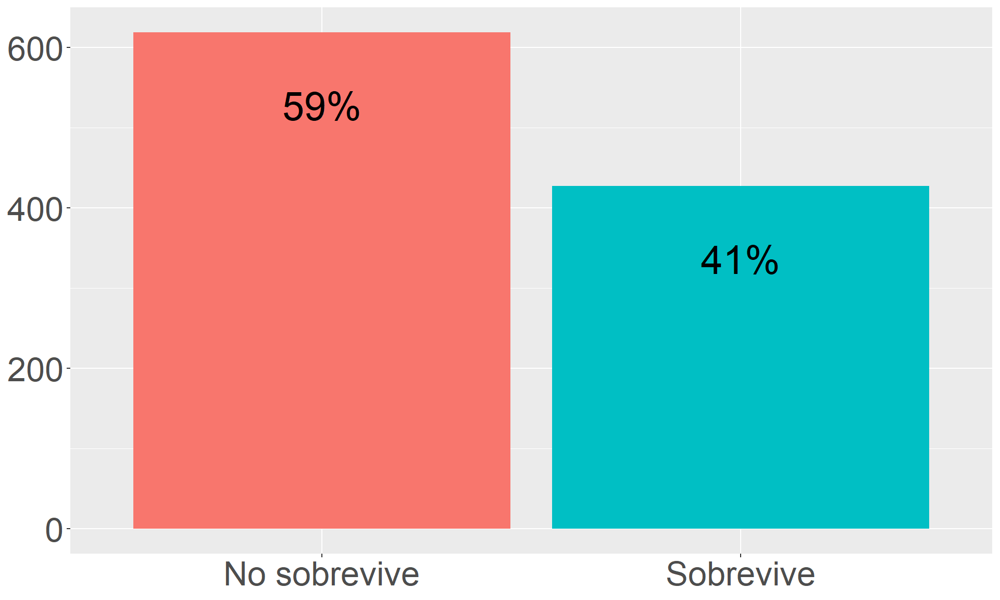
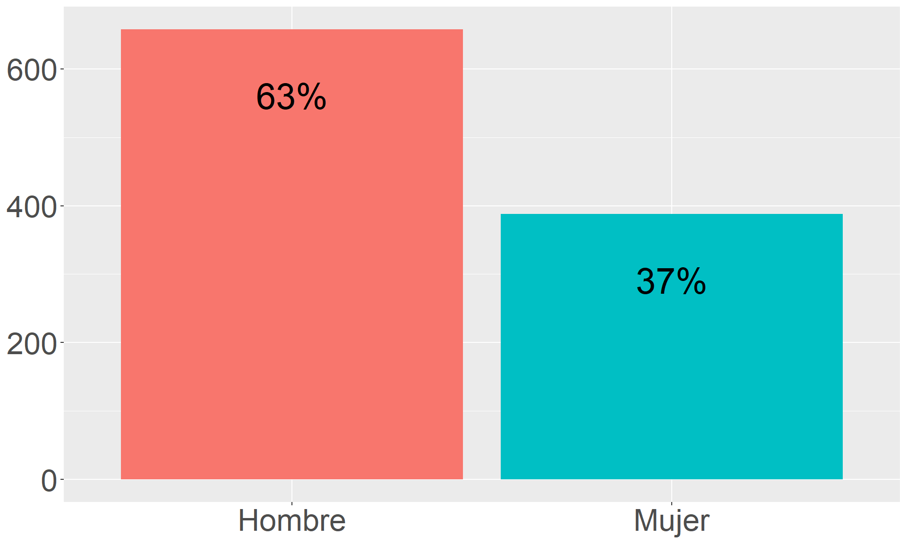
Sobrevivencia / sexo
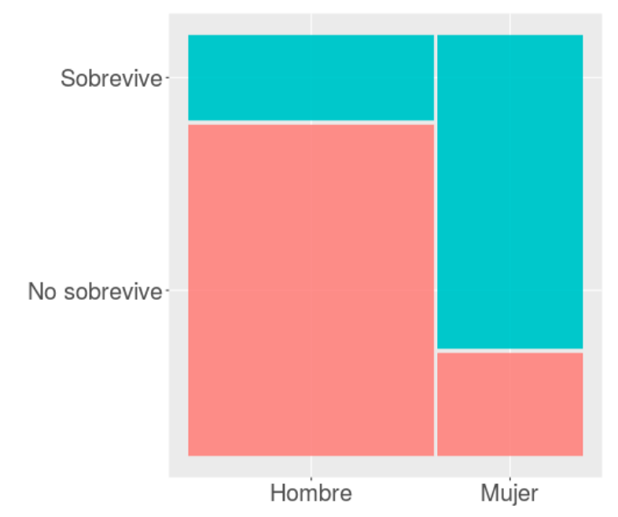
Limitaciones modelo de regresión lineal para dependientes dicotómicas (= modelo de probabilidad lineal)
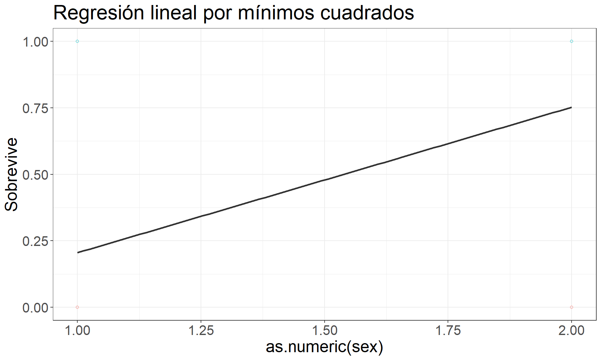
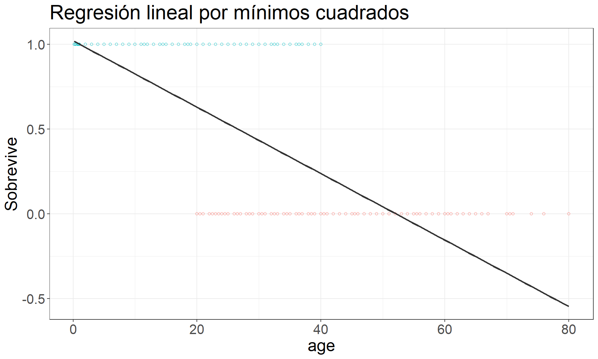
La regresión logística ofrece una solución a los problemas del rango de predicciones y de ajuste a los datos del modelo de probabilidad lineal
Se logra mediante:
(a) expresión de coeficientes como odds-ratio
(b) transformación de los coeficientes a LOGIT
Curvando la recta …
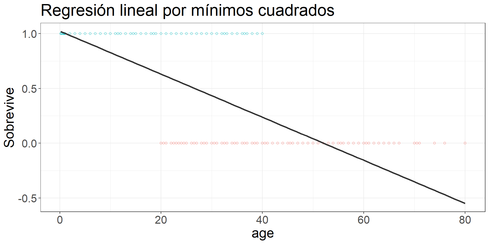

Odds
- odds (chances): probabilidad de que algo ocurra dividido por la probabilidad de que no ocurra
\[Odds=\frac{p}{1-p}\]
Ej. Titanic:
- 427 sobrevivientes (41%), 619 muertos (59%)
\[Odds_{sobrevivir}=427/619=0.41/0.59=0.69\]
Es decir, las chances de sobrevivir son de 0.69
Odds ratio (OR)
- los odds-ratio (o razón de chances) permiten reflejar la asociación entre las chances de dos variables dicotómicas
¿Tienen las mujeres más chances de sobrevivir que los hombres?
| survived | sex | Total | |
| Hombre | Mujer | ||
| No sobrevive | 523 79.5 % |
96 24.7 % |
619 59.2 % |
| Sobrevive | 135 20.5 % |
292 75.3 % |
427 40.8 % |
| Total | 658 100 % |
388 100 % |
1046 100 % |
Odds Ratio
¿Cuántas más chances de sobrevivir tienen las mujeres respecto de los hombres?
- OR supervivencia mujeres / OR supervivencia hombres
\[OR=\frac{p_{m}/(1-p_{m})}{p_{h}/(1-p_{h})}=\frac{0.753/(1-0.753)}{0.205/(1-0.205)}=\frac{3.032}{0.257}=11.78\]
Las chances de sobrevivir de las mujeres son 11.78 veces más que las de los hombres.
2. Regresión logística: Estimación
Regresión logística y odds
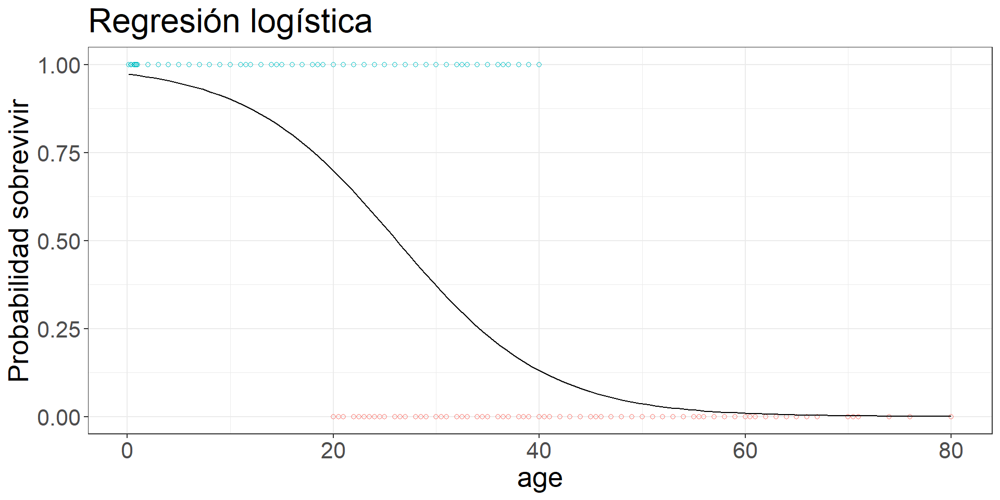
Una de las transformaciones que permite realizar una estimación de regresión con variables dependientes dicotómicas es el logit, que es logaritmo de los odds.
Logit
\[Logit=ln(Odd)=ln(\frac{p}{1-p})\]
Probabilidades, odds y logit
#> prob odds logit
#> 0.0010
#> 0.0564
#> 0.1119
#> 0.1673
#> 0.2228
#> 0.2782
#> 0.3337
#> 0.3891
#> 0.4446
#> 0.5000
#> 0.5554
#> 0.6109
#> 0.6663
#> 0.7218
#> 0.7772
#> 0.8327
#> 0.8881
#> 0.9436
#> 0.9990Probabilidades, odds y logit
#> prob odds logit
#> 0.0010 0.0010 -6.907
#> 0.0564 0.0598 -2.816
#> 0.1119 0.1260 -2.072
#> 0.1673 0.2010 -1.605
#> 0.2228 0.2866 -1.250
#> 0.2782 0.3855 -0.953
#> 0.3337 0.5008 -0.692
#> 0.3891 0.6370 -0.451
#> 0.4446 0.8004 -0.223
#> 0.5000 1.0000 0.000
#> 0.5554 1.2494 0.223
#> 0.6109 1.5700 0.451
#> 0.6663 1.9970 0.692
#> 0.7218 2.5942 0.953
#> 0.7772 3.4888 1.250
#> 0.8327 4.9761 1.605
#> 0.8881 7.9374 2.072
#> 0.9436 16.7165 2.816
#> 0.9990 999.0000 6.907Probabilidades, odds y logit (destacado)
## prob odds logit
## 0.0010 0.0010 -6.907 # <
## 0.0564 0.0598 -2.816
## 0.1119 0.1260 -2.072
## 0.1673 0.2010 -1.605
## 0.2228 0.2866 -1.250
## 0.2782 0.3855 -0.953
## 0.3337 0.5008 -0.692
## 0.3891 0.6370 -0.451
## 0.4446 0.8004 -0.223
## 0.5000 1.0000 0.000 # <
## 0.5554 1.2494 0.223
## 0.6109 1.5700 0.451
## 0.6663 1.9970 0.692
## 0.7218 2.5942 0.953
## 0.7772 3.4888 1.250
## 0.8327 4.9761 1.605
## 0.8881 7.9374 2.072
## 0.9436 16.7165 2.816
## 0.9990 999.0000 6.907 # <Estimación en R: glm
glm(general lineal model) es la función para variables dependientes categóricasfamily="binomial"indica que la dependiente es dicotómica
Ejemplo Titanic
| Logit | OR | |
|---|---|---|
| Intercepto | -1.354*** | 0.258*** |
| (0.097) | ||
| Mujer (Ref=Hombre) | 2.467*** | 11.784*** |
| (0.152) | ||
| AIC | 1106.008 | 1106.008 |
| BIC | 1115.914 | 1115.914 |
| Log Likelihood | -551.004 | -551.004 |
| Deviance | 1102.008 | 1102.008 |
| Num. obs. | 1046 | 1046 |
| ***p < 0.001; **p < 0.01; *p < 0.05 | ||
Interpretación de asociaciones y contraste de hipótesis
Coeficiente logit asociado a sexo (mujer) = +2.467:
- El log-odds de sobrevivencia aumenta para las mujeres en 2.467 en comparación con los hombres.
Contraste de hipótesis
- La diferencia de las probabilidades de sobrevivir entre hombres y mujeres son estadísticamente significativas, por lo que se rechaza la hipótesis nula (de ausencia de diferencias entre hombres y mujeres) con un nivel de probabilidad \(p<0.001\).
Interpretación de coeficientes logit
Sustantivamente no nos dice mucho, ya que el logit es una transformación de la escala original.
Por lo tanto, para poder interpretar el sentido del coeficiente se requiere volver a la métrica de odds mediante una transformación inversa o exponenciación
De logits a odds
De logits a odds
\[Odds_X=e^{\beta_0 + \beta_jX_j}\]
Predicción para mujeres = -1.354 + (2.467 * Sexo=1) = 1.113
Predicción para hombres = -1.354 + (2.467 * Sexo=0) = -1.354
\[Odds_{mujer}=e^{1.113}=3.032\] \[Odds_{hombre}=e^{-1.354}=0.257\]
Regresión logística simple para independientes continuas
| Logit | OR | |
|---|---|---|
| Intercepto | -0.137 | 0.872 |
| (0.145) | ||
| Edad | -0.008 | 0.992 |
| (0.004) | ||
| AIC | 1415.383 | 1415.383 |
| BIC | 1425.288 | 1425.288 |
| Log Likelihood | -705.691 | -705.691 |
| Deviance | 1411.383 | 1411.383 |
| Num. obs. | 1046 | 1046 |
| ***p < 0.001; **p < 0.01; *p < 0.05 | ||
Plot probabilidades predichas
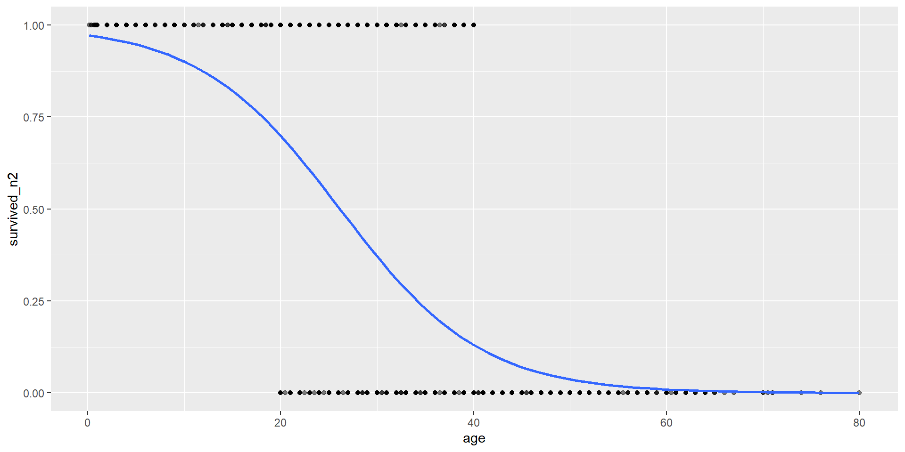
Regresión logística múltiple
| Logit | OR | |
|---|---|---|
| Intercepto | -1.23*** | 0.29*** |
| (0.18) | ||
| Mujer (Ref=Hombre) | 2.46*** | 11.71*** |
| (0.15) | ||
| Edad | -0.00 | 1.00 |
| (0.01) | ||
| AIC | 1107.34 | 1107.34 |
| BIC | 1122.20 | 1122.20 |
| Log Likelihood | -550.67 | -550.67 |
| Deviance | 1101.34 | 1101.34 |
| Num. obs. | 1046 | 1046 |
| ***p < 0.001; **p < 0.01; *p < 0.05 | ||
R para el análisis de datos
Sesión 9: Regresión logística
Kevin Carrasco
Sociología - UAH
1er Sem 2026
R-data-analisis.netlify.com